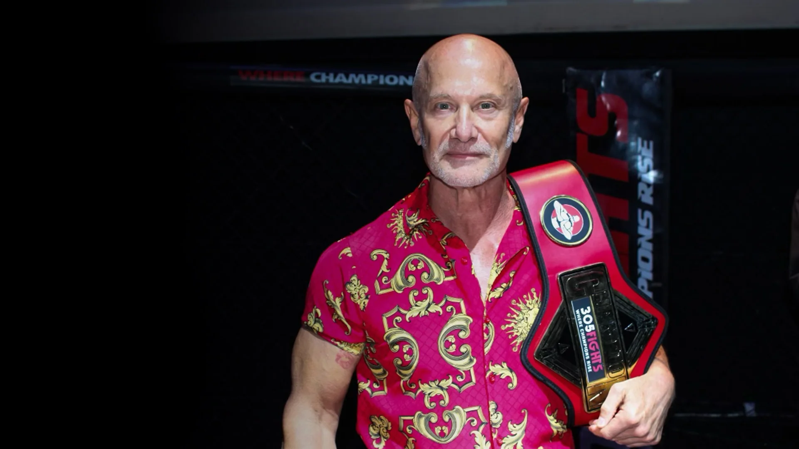
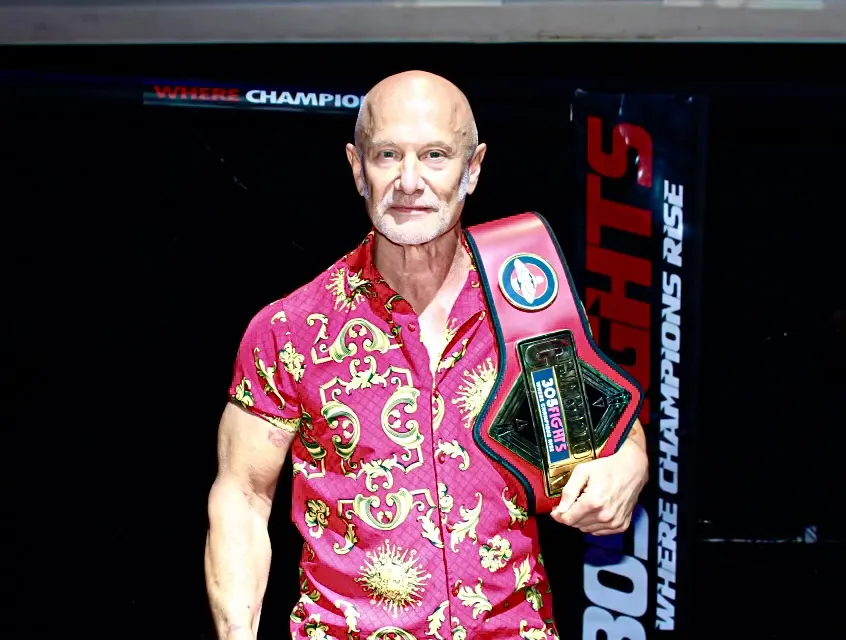

The Story
Connection first. The Five Pillars introduced through the fight and the film.
Inspire
Students leave school with knowledge. Employers want discipline, accountability, resilience and ownership. Taking the Fight gives students a practical framework for both, from a man who started fighting at 48 and became a champion at 62.
Many students enter the workplace without enough preparation in the human skills and performance mindset employers expect. Taking the Fight connects real human challenges to practical skills and ownership.
The Five Pillars become a framework for workplace readiness, self-improvement and championship performance, in class, on a team, in a first job and in life.
Same core framework, with examples drawn from academics, campus jobs, athletics, student organizations, career prep and family.
The tool: Name It. Perspective-ize It. Find A Way. Build the Checklist.
“The difference between stress and challenge is perspective.”
The tool: Find the Fight. Weigh It. Take It First. Sign It.
“Successful people do what unsuccessful people don’t want to do.”
The tool: Pick Your Opponent. Watch the Film. Corner Talk. Win the Round.
“Your real competition is not the person across from you. It is who you were yesterday.”
The tool: Build Your Corner. Resource Them. Listen Without Ego. Let Them Own the Fix.
“Judge people by the full body of their work, not their worst five minutes.”
The tool: The Daily Fight Card: a three-minute morning routine.
“Three things happen every day: excuses, apologies and results. Only one of them matters.”

Nico was a young karate student who was afraid. Stuart talked with him about courage and living outside his comfort zone. Nico became a Junior National Karate Champion, then, at 16, scored the entire Taking the Fight documentary and won four awards for Best Original Music Score.
“The foundation of courage is fear.”
Connection first. The Five Pillars introduced through the fight and the film.
InspireStudents apply the pillars to their own challenges with worksheets and a daily practice.
ApplyThe full curriculum for leadership programs, athletics and career-readiness tracks.
DevelopWeekly reinforcement, with a teacher or advisor update each week.
Reinforce“Your real competition is not the person across from you. It is who you were yesterday.”
— Stuart Warren Dansby
Start with a short call with Stuart about your students, your calendar and what you want them to walk away with.